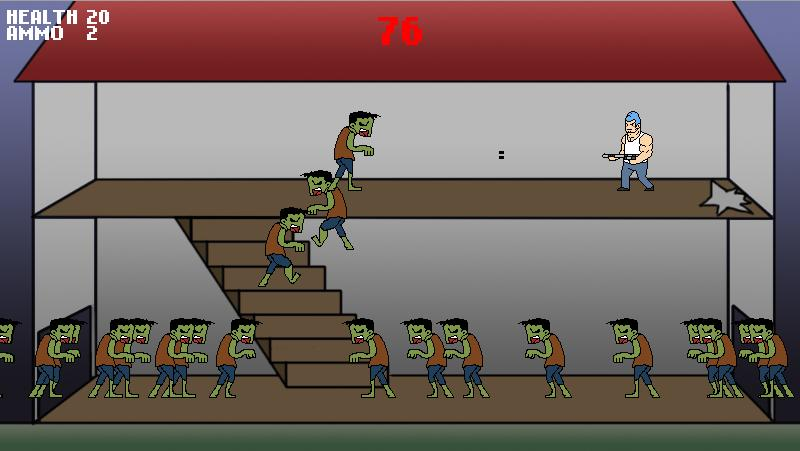

PROJECTS
Just a compiled list of my technical projects that I have done aside from school projects
Flash Projects

Z7 - An imcompleted Turn-based RPG game. Currently only has core gameplay mechanics.
Controls: Up&Down Arrow Keys to Choose Option / Z or J to Select / X or K to Return(Unselect)

Planet Snake - A game done in the Vancouver Global Game Jam event.

ZZ - An imcompleted brawling-sidescrolling-rpg game. Currently only has player mechanics.
Controls: Left&Right Arrow keys to Move / Up arrow key to Jump / X to fight&combo

Zombie Apocalypse - A zombie survivor game programmed within 24 hours.
2 Character players, selectable on Menu screen. Second character require unlocking first (by beating the game with 1st character).
Controls: Left&Right Arrow Keys to Move / Up Arrow Key to Jump / Space to shoot / R to reload (auto reloads when 0 ammo

Pew Pew RPG - My first actionscript 3 game using Flixel. Contains only 1 stage with RPG elements.
Controls: Left&Right Arrow Keys to Move / Up Arrow Key to Jump / Space to shoot / Z to double shot (require pre-skill) / Q to Snowflake (deprecated skill)
Javascript/Android
Gratuity Calculator - The javascript version, which was later ported to Android.